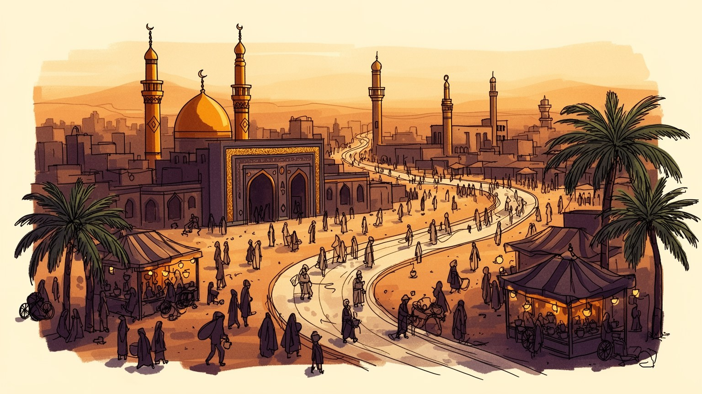
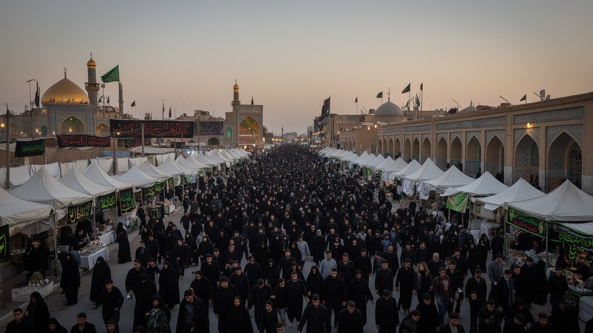
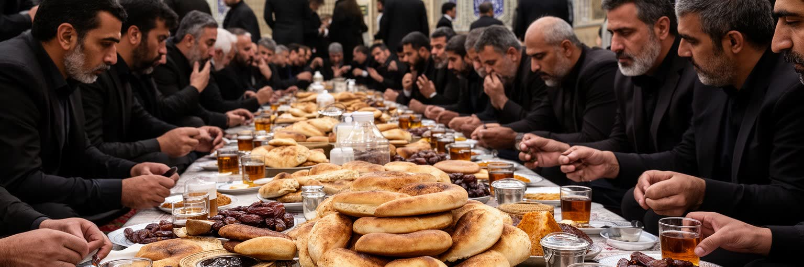
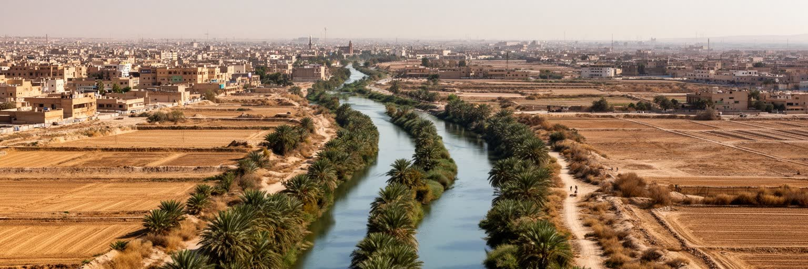
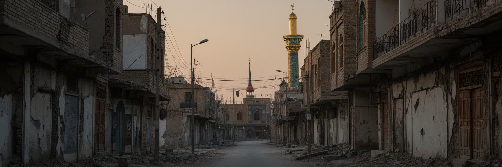

地政学
カルバラーはイラク中央部の宗教都市で、バグダード、ナジャフ、シリア方面の回廊と結びつきます。聖廟の安全は国内政治、宗派関係、巡礼外交に直結し、県都の行政、道路管理、情報共有も緊張を帯びる要点です。

🇮🇶 イラク / カルバラー県 / World City Atlas
シーア派イスラムの記憶を支える聖地です。フサイン廟、アッバース廟、巡礼路、旧市街、ホテル、学校、農村の縁辺が重なり、祈りと都市運営が日常を形づくります。
都市の骨格
カルバラーは宗教的象徴であると同時に、宿泊、交通、警備、給水、医療、清掃、商業、学校を動かす生活都市です。

カルバラーはイラク中央部の宗教都市で、バグダード、ナジャフ、シリア方面の回廊と結びつきます。聖廟の安全は国内政治、宗派関係、巡礼外交に直結し、県都の行政、道路管理、情報共有も緊張を帯びる要点です。
都市経済は巡礼者の宿泊、食堂、小売、交通、清掃、建設、宗教教育、農産物流に支えられます。繁忙期は雇用を増やす一方、季節変動と過密は働く人の時間、賃金、住宅、暑熱対策を重くします。小商いも街を支えます。
カルバラーではアーシューラーとアルバイーンの記憶が街の暦を決め、詩、哀悼、施食、行列、説教が公共空間を満たします。信仰は観光資源ではなく、家族、共同体、正義の記憶を結ぶ生活文化です。声も厚いです。
住民は聖廟に近い誇りを持ちながら、家賃、混雑、検問、暑さ、学校、病院、買い物を調整して暮らします。巡礼者の波は収入を生みますが、日常の移動や静けさも揺らすため、住む都市としての視点が欠かせません。
カルバラーの中心は、イマーム・フサイン廟とアッバース廟を軸にした聖域です。二つの聖廟は単なる名所ではなく、街路の向き、宿泊施設の配置、商店の品ぞろえ、警備線、歩行者の流れ、記憶の語り方まで決める都市の核になっています。中心部では祈り、哀悼、待ち合わせ、買い物、休息、施食が同じ広場と路地に重なり、宗教空間と商業空間の境界は細かく揺れます。訪問者は聖廟を目指して歩くが、そこへ至る道には宿、茶店、香料、布、宗教書、携帯電話、両替、食堂、休憩所が並び、巡礼の時間を実務的に支えます。聖域周辺の再整備は安全と収容力を高める一方、古い路地や住民の記憶を薄めることもあります。カルバラーの都市核を読むことは、信仰の中心がどのように日常の商い、治安、土地利用、家族の移動を組み替えるのかを読むことです。静かな祈りの背後には、毎日の清掃、修繕、給水、電力、群衆誘導、医療対応があります。中心へ近いほど地価は高く、宿泊施設や宗教用品店が増えるため、住民の買い物や子どもの通学は迂回を求められることもあります。聖廟は心の中心であるだけでなく、都市の経済、交通、記憶を引き寄せる重力として働きます。その重力を受け止める細い路地と広場の使い方に、カルバラーらしい緊張が表れます。中心の輝きは、周辺で暮らす人の忍耐と調整にも支えられています。

カルバラーは点として存在する聖地ではなく、バグダード、ナジャフ、バスラ、イラン国境、湾岸、さらに世界各地から続く移動の網の終点です。とくにアルバイーンの徒歩巡礼では、道路そのものが信仰の空間になり、休憩所、施食所、簡易診療、給水、道案内、寝場所が連続します。歩く人の列は都市の内外を結び、農村、郊外、検問、橋、バスターミナル、聖廟前の広場を一つの経験へ変えます。巡礼路は信仰の平等を象徴するが、実際には体力、年齢、国籍、言語、所得、障害の有無によって経験が異なります。都市側には、群衆を分散させ、迷子を助け、熱中症を防ぎ、緊急車両を通し、宿泊と帰路を確保する責任があります。歩く巡礼は自発的な奉仕を生み、同時に国家と自治体の高度な管理を必要とします。カルバラーの広域性は、中心の聖廟だけでなく、そこへ至る道路と沿道の人びとの働きに表れています。沿道の家族や団体が無料で食事や水を配る行為は、都市と地方の関係を温かく結ぶ一方、食材、廃棄物、交通整理という現実の負担も生みます。巡礼者が無事に戻れるかは、祈りの熱心さだけでなく、帰路のバス、休憩場所、情報伝達の確かさに左右されます。歩く速度で地域を結ぶこの回廊は、車で通過するだけでは見えない社会の結び目を露わにします。そこで生まれる縁が、聖地の広がりを都市外へ伸ばしています。

カルバラーの経済は、石油収入だけで測れる都市ではありません。聖廟を訪れる人が必要とする宿泊、食事、土産、衣類、宗教書、交通、通信、清掃、警備、医療、両替、建設が、中心部から周辺の住宅地まで雇用を広げています。繁忙期には店員、料理人、運転手、清掃員、警備員、案内人、臨時労働者が増え、家族経営の小さな店も夜遅くまで動きます。宗教都市の消費は信仰と結びつくため、香料、布、旗、数珠、陶器、菓子、施食用の食材にも独自の需要があります。一方で、収入は季節や治安に左右され、家賃や店舗更新の負担は小商いを圧迫します。労働者の多くは長時間、暑熱、混雑、低賃金の問題に直面し、巡礼者の感謝の背後で疲労を抱えます。カルバラーの産業を読むには、聖地の象徴性だけでなく、その象徴性を毎日商品、サービス、労働時間へ変換する人びとの生活を見る必要があります。周辺農村から届く野菜、米、肉、ナツメヤシ、飲料は、食堂と施食を支える物流の基礎になります。仕入れ価格が上がれば、巡礼者向けの無料提供にも負担が及びます。市場のにぎわいは信仰の熱量だけでなく、家族経営の資金繰りと広域の供給網に支えられています。若者に安定した仕事を作れるかも課題で、巡礼期だけの収入に頼る家計は不安定になりやすいです。技能訓練、交通、金融へのアクセスが、小商いの持続を左右します。利益の分配も問われます。

カルバラーの気候は、都市の運営と身体感覚に直接影響します。夏の暑熱は厳しく、巡礼者、屋外労働者、高齢者、子ども、持病のある人にとって熱中症の危険が高まります。日陰、給水、休憩所、冷房、救急対応は、宗教行為を安全に続けるための基本インフラです。雨は乏しいですが、短時間の降雨や排水不備は道路の混乱を起こし、乾燥と砂塵は建物、商品、健康に影響します。カルバラー県には農地や湖沼の周辺環境もあり、水資源、塩害、廃水、灌漑、都市拡大の関係は地域経済と結びつきます。気候変動が暑さと水不足を強めれば、巡礼期の安全、食品供給、電力需要、低所得層の住環境はさらに厳しくなります。聖地の整備は美しい広場やホテルだけで完結しません。涼める公共空間、信頼できる水、廃棄物処理、停電への備え、農村との資源配分まで含めて考える必要があります。暑さは信仰の熱意だけで解決できるものではなく、都市計画と福祉の論点です。冷房に頼るほど電力需要は増え、停電時には高層宿泊施設や病院の脆さが表れます。水の価格や配水の安定は、住民だけでなく無料の施食や宿泊業にも影響します。気候への備えは、聖地の尊厳を守るための社会基盤でもあります。街路樹、日よけ、涼しい休憩所、清潔な公共トイレは小さく見えて重要な投資です。暑さに弱い人を基準に設計すると、巡礼都市はより包容力を持ちます。
カルバラーは世界の巡礼者に向けた都市である前に、学校、診療所、住宅、親族関係、近所の商店、通勤、結婚式、葬儀を持つ住民の都市です。聖廟に近い地区では商業機会が大きい一方、家賃上昇、混雑、駐車、騒音、検問、観光客向け価格が生活を圧迫することがあります。郊外では住宅地が広がり、若い世代は教育、就職、娯楽、交通の選択肢を求めます。女性や子ども、高齢者にとっては、歩きやすい道、日陰、近くの医療、安心して使える公共交通が生活の質を左右します。暑い季節には買い物や通学の時間帯が変わり、断水や停電への備えも重要になります。巡礼都市の住民は、訪問者を迎える誇りを持ちながら、都市が常に外からの視線と需要で動くことに疲れることもあります。カルバラーを住む場所として読むと、聖なる中心の周囲に、家計、教育、病院、休息、近隣の助け合いという地味ですが不可欠な都市条件が見えてきます。親族の集まりや近所の助け合いは、混雑した季節を乗り切る生活技術にもなります。住宅地の小さな店、学校の送り迎え、夕方の買い物、医師への相談は、聖地の大きな物語とは別の速度であります。都市の安定は、こうした日常が壊れずに保たれることで支えられます。巡礼者を迎える家族の誇りは大きいですが、休める時間や静かな近所も必要です。聖地で暮らすことは、名誉と負担を同時に引き受ける生活でもあります。

カルバラーの公共空間は、祈りや市場の場であると同時に、治安管理の場でもあります。イラクの近現代史は戦争、制裁、占領、宗派間暴力、武装勢力の台頭を経験しており、シーア派聖地であるカルバラーは象徴性の高さゆえに攻撃の標的にもなってきました。検問、車両規制、監視、警備員、バリケード、避難導線は、住民と巡礼者に安心を与える一方、日常の移動を遅らせ、都市の開放感を制限します。大規模巡礼の時期には、治安、医療、消防、交通、宗教機関、ボランティアが連携しなければなりません。安全は祈りを守る条件ですが、過度な管理は商売や住民生活に負担をかけます。カルバラーの治安を考えることは、単に危険な都市として見ることではありません。社会が傷を負った後に、聖地を開き続けるための信頼、制度、現場判断をどう積み上げるかを見ることです。警備の存在は緊張の記憶を示し、同時に人びとが集まる権利を支える装置でもあります。巡礼者には安心して歩ける道が必要で、住民には日常の通勤や買い物を妨げすぎない管理が必要になります。検問で交わされる短い会話や、混雑時の誘導の丁寧さも、都市への信頼を左右します。治安は硬い施設だけでなく、現場のふるまいとして経験されます。安全が保たれるほど、外から来る人は祈りに集中できります。その安心を作る労働と緊張は、都市の見えにくい負担でもあります。
カルバラーの文化は、聖廟での祈りだけでなく、声、食、もてなし、詩、家族の語りに宿ります。哀悼の季節には、詩人や朗唱者の声が記憶を運び、施食は信仰を具体的な行為へ変えます。大鍋で作られる料理、茶、甘い菓子、ナツメヤシ、米料理、香辛料は、疲れた巡礼者を迎えるだけでなく、地域の家族や商人の誇りも示します。市場では宗教用品、布、香料、菓子、日用品が並び、巡礼者向けの商品と住民の日常の買い物が同じ通りで交差します。文化はしばしば聖なるものとして語られますが、実際には調理、買い出し、片付け、配膳、店番、価格交渉といった労働に支えられています。もてなしは美徳である一方、費用と疲労を伴う社会的義務にもなります。カルバラーの食と市場を読むと、宗教的な記憶が味、声、匂い、手仕事を通じて身体に残ることが分かります。観光として消費するだけでは、この生活文化の重みは見えにくいです。食を受け取る巡礼者の感謝と、提供する側の準備は互いに尊厳を支える関係になります。市場の音、茶の湯気、香料の匂い、朗唱の節回しは、都市の記憶を五感へ刻みます。文化は展示物ではなく、疲れた身体を休ませ、他者を迎える実践として続いています。食材を運ぶ人、器を洗う人、夜明け前に仕込む人の働きも、もてなしの文化を形づくります。味と声は、信仰を日常へ下ろす大切な回路です。そこに街の温度が残ります。
カルバラーの暑さは、旅行案内の気温表だけではつかめない生活条件です。夏の午後には石畳、車道、建物の壁が熱を持ち、巡礼者の列、屋台、清掃、警備、配送、建設の現場に強い負担をかけます。聖廟へ向かう道では、日陰、散水、冷水、休憩所、救急対応、混雑の分散が安全を左右します。住民の日常でも、学校や買い物の時間帯、電力需要、冷房費、停電時の不安、屋上や中庭の使い方が暑熱に合わせて変わります。ホテルや商店が冷房を使うほど電力網への圧力は増え、低所得の家庭ほど涼しさを確保しにくいです。乾燥と砂塵は呼吸器、商品の保管、機械の維持にも影響します。気候に強い都市を作るには、大規模な施設だけでなく、街路樹、庇、風が通る路地、公共トイレ、給水点、暑さに弱い人への支援が必要です。巡礼の尊厳は、祈る人が倒れずに歩ける都市環境によって守られます。暑熱への備えは、宗教行事の安全管理であると同時に、住民の福祉政策でもあります。夜になっても熱が抜けにくい地区では、屋外で働いた人の疲労が翌日に残り、医療や清掃の現場にも負担が回ります。涼しい避難場所を点ではなく歩ける距離に配置することが、街全体の安心を高めます。子どもや高齢者の歩幅で暑さを測る視点も欠かせません。日陰の連続性も都市の質になります。カルバラーの未来は、酷暑を例外ではなく都市の基本条件として扱えるかにかかっています。
カルバラーは聖廟の周囲だけで完結する都市ではなく、バスターミナル、郊外道路、検問、駐車場、ホテル街、臨時の乗降場所、サービス施設が連動して動きます。巡礼期には国内各地や国外から人が到着し、短い時間で宿を探し、聖域へ歩き、食事を取り、帰路へ向かいます。そこには運転手、荷物運び、清掃員、案内人、翻訳、警備、医療、通信、食材配送、廃棄物処理の仕事が重なります。移動が詰まれば祈りの時間だけでなく、住民の通勤、学校、救急、商店の仕入れも止まります。都市サービスは歓迎の表情を作る一方で、混雑、騒音、価格上昇、道路の傷み、短期雇用の不安定さを伴います。移住労働者や周辺農村から来る働き手も、巡礼経済の裏側を支えています。カルバラーを読むには、聖なる目的地へ到着した瞬間だけでなく、人がどこから来て、誰が運び、どこで休み、どのように帰るのかを見る必要があります。公共交通、歩行者動線、休憩施設、情報案内が整うほど、来訪者の負担は減り、住民の生活も守られます。臨時の案内所や医療テントは便利な設備であるだけでなく、言葉の違う巡礼者を安心させる窓口にもなります。帰路の混雑をどう逃がすかは、最後の記憶を左右します。小さな誘導の失敗も大きな疲労に変わります。駅前や車庫の働きも見落とせません。都市のもてなしは善意だけでなく、複雑なサービス網の設計によって成り立ちます。

カルバラーを理解するには、聖廟の荘厳さだけでなく、そこへ向かう道路、宿、食堂、市場、学校、住宅地、検問、診療所、農村とのつながりを一緒に見る必要があります。都市は殉教の記憶を中心にしていますが、その記憶を支えるのは、詩を朗唱する人、食事を配る家族、道路を掃除する労働者、宿を管理する人、警備に立つ人、子どもを学校へ送る住民です。巡礼は世界中のシーア派に精神的な結びつきを与える一方、過密、暑熱、費用、治安、政治的緊張を都市へ集中させます。カルバラーは信仰都市であると同時に、イラクの国家再建、宗派関係、地域経済、気候リスク、若者の将来を映す都市でもあります。訪れる人の感動と住む人の負担、聖なる中心と周辺の日常、記憶の継承と再開発の速度を重ねて読むことで、カルバラーは単なる巡礼地ではなく、現代都市として立ち上がります。祈りの力は都市を支えますが、都市の制度と労働が祈りを支えています。中心の光だけを見れば、宿泊業の疲労や郊外の住宅問題、水不足、若者の雇用は見えにくいです。反対に困難だけを見れば、遠くから歩いて来る人を迎える誇りや、記憶を分かち合う力を見落とします。両方を同時に見ることが、カルバラーを読む出発点になります。宗教、労働、政治、気候、家族生活が重なるため、都市の評価は来訪者数だけでは決まりません。人が祈り、働き、帰るまでを支えられるかが、聖地の力を測る基準になります。